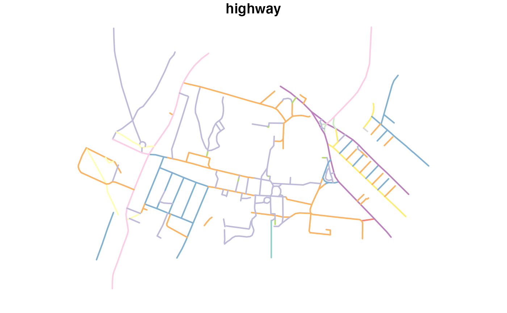
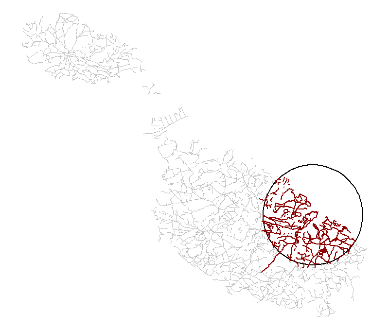

This vignette provides an introduction to using the package, building on the README which covers installation and our motivations for creating it.
Loading the package generates important messages about the license associated with OSM data.
library(osmextract)
#> Data (c) OpenStreetMap contributors, ODbL 1.0. https://www.openstreetmap.org/copyright.
#> Check the package website, https://docs.ropensci.org/osmextract/, for more details.The first thing to say is: do not ignore this message! The Open Street Map (OSM) extracts are stored by external providers such as Geofabrik, Bbbike, or OpenStreetMap.fr. There are important legal considerations that you should be aware of before using OSM data, especially if you are working in a for-profit capacity.
Legal considerations
Anyone using OSM data is bound by law to adhere to the ODbL, which means that you must:
- Attribute: You must attribute any public use of the database, or works produced from the database, in the manner specified in the ODbL. For any use or redistribution of the database, or works produced from it, you must make clear to others the license of the database and keep intact any notices on the original database.
- Share-Alike: If you publicly use any adapted version of this database, or works produced from an adapted database, you must also offer that adapted database under the ODbL.
- Keep open: If you redistribute the database or an adapted version of it, then you may use technological measures that restrict the work (such as DRM) as long as you also redistribute a version without such measures.
In short, publicly using OSM data without attribution or selling datasets derived from it is illegal. See the License/Use Cases page on the OSM wiki for detailed use cases.
Main package functions
The package is composed of the following main functions:
-
oe_providers(): Show which OSM providers are available; -
oe_match(): Match an input place with one of the files stored by the OSM providers; -
oe_download(): Download the chosen file; -
oe_vectortranslate(): Convert between.pbfand.gpkgformats; -
oe_read(): Read.pbfand.gpkgfiles; -
oe_get(): Match, download, (vector)translate, and import data, all in one step.
For many users who just want to get OSM data quickly,
oe_get() may be sufficient, as covered in the README. We
will demonstrate each function in turn, following the same order in
which they are typically used. As you can see, the name of the most
important functions in this package start with oe_* prefix,
which means that you can easily use auto-completion features (with
Rstudio or similar IDE(s)).
oe_providers(): List providers
oe_providers() lists the providers that are currently
available with the version of osmextract you have
installed.
oe_providers()
#> Check the corresponding help pages to read more details about the fields in each database (e.g. ?geofabrik_zones)
#> available_providers database_name number_of_zones number_of_fields
#> 1 geofabrik geofabrik_zones 475 8
#> 2 bbbike bbbike_zones 236 5
#> 3 openstreetmap_fr openstreetmap_fr_zones 1135 6Each element in the column database_name is a data
object that is packaged with osmextract. You can read a
detailed description of each provider data running, for example,
?geofabrik_zones or ?bbbike_zones.
Perhaps, the best known bulk OSM data provider is Geofabrik, and its extracts are
summarised as a data.frame in the packaged object
geofabrik_zones.
class(geofabrik_zones)
#> [1] "sf" "data.frame"Note that in addition to being a data frame with rows and columns,
geofabrik_zones is also an sf object, as
defined in the package of
the same name. When working with sf objects, it makes sense
to have the package loaded:
That gives you access to many functions for working with geographic
vector data of the type provided by osmextract. Each row of
data in an sf object contains a geometry, representing the
area covered by a provider zone, meaning you can plot the data as
follows:
par(mar = rep(0.1, 4))
plot(st_geometry(geofabrik_zones))The plot above shows how the provider divides geographic space into discrete chunks. Different providers have other zoning systems. For example:
par(mar = rep(0.1, 4))
plot(st_geometry(spData::world), xlim = c(-2, 10), ylim = c(35, 60))
plot(st_geometry(bbbike_zones), xlim = c(-2, 10), ylim = c(35, 60), col = "darkred", add = TRUE)
As shown in the visualisation above of BBBike.org zones in Europe, that provider offers rectangular extracts of the major cities. We are working on adding support for manually selected regions from the BBBike website (see https://github.com/ropensci/osmextract/issues/100).
Check the “Comparing the supported OSM providers” vignette for some simple guidelines on how to choose the best provider.
oe_match(): Match an input place with an OSM
extract
The function oe_match() takes in input a string through
the parameter place, and it returns a named list of length
two with the URL and the size (in bytes) of a .osm.pbf1 file
representing a geographical zone stored by one of the supported
providers. For example:
oe_match("Italy")
#> The input place was matched with: Italy
#> $url
#> [1] "https://download.geofabrik.de/europe/italy-latest.osm.pbf"
#>
#> $file_size
#> [1] 1.7e+09
oe_match("Leeds", provider = "bbbike")
#> The input place was matched with: Leeds
#> $url
#> [1] "https://download.bbbike.org/osm/bbbike/Leeds/Leeds.osm.pbf"
#>
#> $file_size
#> [1] 24362749The geographical zone is chosen by calculating the Approximate String
Distance (?adist()) between the input place
and one of the fields in the provider’s dataset. Then, the function
selects the closest match. By default, oe_match() uses the
name field and Geofabrik provider, but you can
select a different field via the argument match_by. We
refer to the providers’ help pages for a detailed description of all
available fields. If you are using Geofabrik provider, a useful and
interesting alternative field is represented by the (unique and
unambiguous) iso3166-1 alpha2
codes:
oe_match("RU", match_by = "iso3166_1_alpha2")
#> The input place was matched with: RU
#> $url
#> [1] "https://download.geofabrik.de/russia-latest.osm.pbf"
#>
#> $file_size
#> [1] 3.2e+09
oe_match("US", match_by = "iso3166_1_alpha2")
#> The input place was matched with: US
#> $url
#> [1] "https://download.geofabrik.de/north-america/us-latest.osm.pbf"
#>
#> $file_size
#> [1] 8.9e+09There are a few scenarios where the iso3166-1 alpha2
codes in geofabrik_data cannot be used since there are no
per-country extracts (e.g. Israel and Palestine):
oe_match("PS", match_by = "iso3166_1_alpha2", quiet = TRUE)
#> Error: No tolerable match was found. You should try increasing the max_string_dist parameter, look for a closer match in another provider or consider using a different match_by variable.
oe_match("IL", match_by = "iso3166_1_alpha2", quiet = TRUE)
#> Error: No tolerable match was found. You should try increasing the max_string_dist parameter, look for a closer match in another provider or consider using a different match_by variable.For this reason, we coded a function named
oe_match_pattern() to explore the matching operations for
all available providers according to a pre-defined pattern. It returns a
named list where the names are the id(s) of the supported OSM providers
and the values are the matched names. For example:
oe_match_pattern("London")
#> $geofabrik
#> [1] "Greater London"
#>
#> $bbbike
#> [1] "London"
#>
#> $openstreetmap_fr
#> [1] "Greater London"
oe_match_pattern("Yorkshire")
#> $geofabrik
#> [1] "East Yorkshire with Hull" "North Yorkshire" "South Yorkshire"
#> [4] "West Yorkshire"
#>
#> $openstreetmap_fr
#> [1] "Yorkshire And The Humber"
oe_match_pattern("Russia")
#> $geofabrik
#> [1] "Russian Federation"
#>
#> $openstreetmap_fr
#> [1] "Russia"
oe_match_pattern("Palestine")
#> $geofabrik
#> [1] "Israel and Palestine"
#>
#> $openstreetmap_fr
#> [1] "Israel And Palestine" "Palestine"The default field is name, but we can change that as
follows:
oe_match_pattern("US", match_by = "iso3166_2")
#> $geofabrik
#> [1] "US-AL" "US-AK" "US-AZ" "US-AR" "US-CA" "US-CO" "US-CT" "US-DE" "US-DC" "US-FL" "US-GA" "US-HI"
#> [13] "US-ID" "US-IL" "US-IN" "US-IA" "US-KS" "US-KY" "US-LA" "US-ME" "US-MD" "US-MA" "US-MI" "US-MN"
#> [25] "US-MS" "US-MO" "US-MT" "US-NE" "US-NV" "US-NH" "US-NJ" "US-NM" "US-NY" "US-NC" "US-ND" "US-OH"
#> [37] "US-OK" "US-OR" "US-PA" "US-PR" "US-RI" "US-SC" "US-SD" "US-TN" "US-TX" "US-VI" "US-UT" "US-VT"
#> [49] "US-VA" "US-WA" "US-WV" "US-WI" "US-WY"If we set full_row = TRUE, then
oe_match_pattern() will return the complete row(s) from
each provider’s data:
lapply(oe_match_pattern("Israel", full_row = TRUE), function(x) x[, 1:3])
#> $geofabrik
#> Simple feature collection with 1 feature and 3 fields
#> Geometry type: MULTIPOLYGON
#> Dimension: XY
#> Bounding box: xmin: 34.07929 ymin: 29.37711 xmax: 35.91531 ymax: 33.35091
#> Geodetic CRS: WGS 84
#> id name parent geometry
#> 172 israel-and-palestine Israel and Palestine asia MULTIPOLYGON (((34.07929 31...
#>
#> $openstreetmap_fr
#> Simple feature collection with 3 features and 3 fields
#> Geometry type: MULTIPOLYGON
#> Dimension: XY
#> Bounding box: xmin: 33.935 ymin: 29.31 xmax: 36.04 ymax: 33.485
#> Geodetic CRS: WGS 84
#> id name parent geometry
#> 116 israel Israel asia MULTIPOLYGON (((34.25 31.20...
#> 117 israel_and_palestine Israel And Palestine asia MULTIPOLYGON (((34.115 31.2...
#> 118 israel_west_bank Israel West Bank asia MULTIPOLYGON (((34.865 31.3...We can combine the two functions as follows:
oe_match_pattern("Valencia")
#> $geofabrik
#> [1] "Valencia"
#>
#> $openstreetmap_fr
#> [1] "Comunitat Valenciana" "Valencia"
oe_match("Comunitat Valenciana", provider = "openstreetmap_fr")
#> The input place was matched with: Comunitat Valenciana
#> $url
#> [1] "http://download.openstreetmap.fr/extracts/europe/spain/comunitat_valenciana-latest.osm.pbf"
#>
#> $file_size
#> [1] 109632873The parameter max_string_dist (default value is 1)
represents the maximum tolerable distance between the input place and
the closest match in match_by column. This value can always
be increased to help the matching operations, but that can lead to false
matches:
# erroneous match
oe_match("Milan", max_string_dist = 2)
#> The input place was matched with: Iran
#> $url
#> [1] "https://download.geofabrik.de/asia/iran-latest.osm.pbf"
#>
#> $file_size
#> [1] 1.85e+08The parameter max_string_dist is always set to 0 if
match_by argument is equal to iso3166_1_alpha2
or iso3166_2.
If the approximate string distance between the closest match and the
input place is greater than max_string_dist,
then oe_match() will also check the other supported
providers. For example:
oe_match("Leeds")
#> No exact match found for place = Leeds and provider = geofabrik. Best match is Laos.
#> Checking the other providers.
#> An exact string match was found using provider = bbbike.
#> $url
#> [1] "https://download.bbbike.org/osm/bbbike/Leeds/Leeds.osm.pbf"
#>
#> $file_size
#> [1] 24362749
oe_match("London")
#> No exact match found for place = London and provider = geofabrik. Best match is Jordan.
#> Checking the other providers.
#> An exact string match was found using provider = bbbike.
#> $url
#> [1] "https://download.bbbike.org/osm/bbbike/London/London.osm.pbf"
#>
#> $file_size
#> [1] 97431675
oe_match("Vatican City")
#> No exact match found for place = Vatican City and provider = geofabrik. Best match is Valencia.
#> Checking the other providers.
#> An exact string match was found using provider = openstreetmap_fr.
#> $url
#> [1] "http://download.openstreetmap.fr/extracts/europe/vatican_city-latest.osm.pbf"
#>
#> $file_size
#> [1] 663447Finally, if there is no exact match with any of the supported
providers and match_by argument is equal to
"name", then oe_match() will use the Nominatim
API to geolocate the input place and perform a spatial matching
operation (explained below):
oe_match("Milan")
#> No exact match found for place = Milan and provider = geofabrik. Best match is Iran.
#> Checking the other providers.
#> No exact match found in any OSM provider data. Searching for the location online.
#> The input place was matched with Nord-Ovest.
#> $url
#> [1] "https://download.geofabrik.de/europe/italy/nord-ovest-latest.osm.pbf"
#> $file_size
#> [1] 416306623Finding zones based on geographic inputs
The input place can also be specified using an
sf, sfc, or bbox object with
arbitrary CRS2, as documented in the following example.
oe_match() will return a named list of length two with the
URL and the size of a .pbf file representing a zone that
geographically contains the sf or sfc object
(or an error if the input is not contained into any geographical
area).
milan_duomo = sf::st_sfc(sf::st_point(c(1514924, 5034552)), crs = 3003)
oe_match(milan_duomo)
#> The input place was matched with Nord-Ovest.
#> $url
#> [1] "https://download.geofabrik.de/europe/italy/nord-ovest-latest.osm.pbf"
#>
#> $file_size
#> [1] 4.7e+08If the input place intersects multiple geographically
nested areas and the argument level is equal to
NULL (the default value), then oe_match()
automatically returns the extract with the highest level.
In particular, we could roughly say that smaller geographical areas are
associated with higher level(s). For example,
level = 1 may correspond to continent-size extracts,
2 is for countries, 3 represents the regions
and 4 the subregions:
yak = c(-120.51084, 46.60156)
oe_match(yak, level = 1, quiet = TRUE)
#> $url
#> [1] "https://download.geofabrik.de/north-america-latest.osm.pbf"
#>
#> $file_size
#> [1] 1.21e+10
oe_match(yak, level = 2, quiet = TRUE) # the default
#> $url
#> [1] "https://download.geofabrik.de/north-america/us/washington-latest.osm.pbf"
#>
#> $file_size
#> [1] 2.42e+08
oe_match(yak, level = 3, quiet = TRUE) # error
#> Error: The input place does not intersect any area at the chosen level.If there are multiple OSM extract intersecting the input
place at the same level, then
oe_match() will return the area whose centroid is closest
to the input place.
If you specify more than one geometry into the sf or
sfc object, then oe_match() will select an
area that contains all of them.
milan_leeds = st_sfc(
st_point(c(9.190544, 45.46416)), # Milan
st_point(c(-1.543789, 53.7974)), # Leeds
crs = 4326
)
oe_match(milan_leeds)
#> The input place was matched with Europe.
#> $url
#> [1] "https://download.geofabrik.de/europe-latest.osm.pbf"
#>
#> $file_size
#> [1] 2.63e+10The same operations work with LINESTRING or
POLYGON objects:
milan_leeds_linestring = st_sfc(
st_linestring(
rbind(c(9.190544, 45.46416), c(-1.543789, 53.7974))
),
crs = 4326
)
oe_match(milan_leeds_linestring)
#> The input place was matched with Europe.
#> $url
#> [1] "https://download.geofabrik.de/europe-latest.osm.pbf"
#>
#> $file_size
#> [1] 2.63e+10The input place can also be specified using a numeric
vector of coordinates. In that case, the CRS is assumed to be EPSG:4326:
oe_match(c(9.1916, 45.4650)) # Duomo di Milano using EPSG: 4326
#> The input place was matched with Nord-Ovest.
#> $url
#> [1] "https://download.geofabrik.de/europe/italy/nord-ovest-latest.osm.pbf"
#>
#> $file_size
#> [1] 4.7e+08Finally, to reduce unnecessary computational resources and save bandwidth/electricity, we will use a small OSM extract in subsequent sections that can be matched as follows:
# ITS stands for Institute for Transport Studies: https://environment.leeds.ac.uk/transport
(its_details = oe_match("ITS Leeds"))
#> The input place was matched with: ITS Leeds
#> $url
#> [1] "https://github.com/ropensci/osmextract/raw/master/inst/its-example.osm.pbf"
#>
#> $file_size
#> [1] 40792
oe_download(): Download OSM extracts
The oe_download() function is used to download
.pbf files representing OSM extracts. It takes in input a
URL, through the parameter file_url, and it downloads the
requested data in a directory (specified by the parameter
download_directory):
oe_download(
file_url = its_details$url,
file_size = its_details$file_size,
provider = "test",
download_directory = # path-to-a-directory
)The argument provider can be omitted if the input
file_url is associated with one of the supported providers.
The default value for download_directory is
tempdir() (see ?tempdir), but, if you want to
point to a directory that will persist, you can add
OSMEXT_DOWNLOAD_DIRECTORY=/path/for/osm/data in your
.Renviron file, e.g. with:
usethis::edit_r_environ()
# Add a line containing: OSMEXT_DOWNLOAD_DIRECTORY=/path/for/osm/dataYou can always check the default download_directory used
by oe_download() with:
oe_download_directory()
#> [1] "/tmp/RtmpjwY7X3"We strongly advise you setting a persistent directory since
downloading and converting (see the next sub-section) .pbf
files are expensive operations, that can be skipped if the functions
detect that the requested extract was already downloaded and/or
converted.
More precisely, oe_download() runs several checks before
actually downloading a new file, to avoid overloading the OSM providers.
The first step is the definition of the path associated with the input
file_url. The path is created by pasting together the
download_directory, the name of the chosen provider
(specified by provider argument or inferred from the input
URL), and the basename() of the URL. For example, if
file_url is equal to
"https://download.geofabrik.de/europe/italy-latest.osm.pbf",
and download_directory = "/tmp/, then the path is built as
/tmp/geofabrik_italy-latest.osm.pbf. In the second step,
the function checks if the new path/file already exists (using
file.exists()) and, in that case, it returns the path,
without downloading anything3. Otherwise, it downloads a new file (using
download.file() with mode = "wb") and then it
returns the path.
oe_vectortranslate(): Convert to gpkg format
The oe_vectortranslate() function translates a
.pbf file into .gpkg format4. It takes in input a
string representing the path to an existing .pbf file, and
it returns the path to the newly generated .gpkg file. The
.gpkg file is created in the same directory as the input
.pbf file and with the same name. The conversion is
performed using ogr2ogr
through vectortranslate utility in
sf::gdal_utils().
We decided to adopt this approach following the suggestions of the maintainers of GDAL. Moreover, GeoPackage files have database capabilities like random access and querying that are extremely important for OSM data (see below).
Let’s start with an example. First, we download the .pbf
file associated with ITS example:
## its_pbf = oe_download(its_details$url, provider = "test", quiet = TRUE) # skipped online, run it locally
list.files(oe_download_directory(), pattern = "pbf|gpkg")
#> [1] "test_its-example.osm.pbf"and then we convert it to .gpkg format:
its_gpkg = oe_vectortranslate(its_pbf)
#> Starting with the vectortranslate operations on the input file!
#> 0...10...20...30...40...50...60...70...80...90...100 - done.
#> Finished the vectortranslate operations on the input file!
list.files(oe_download_directory(), pattern = "pbf|gpkg")
#> [1] "test_its-example.gpkg" "test_its-example.osm.pbf"The vectortranslate operation can be customised in several ways
modifying the parameters layer, extra_tags,
osmconf_ini, vectortranslate_options,
boundary and boundary_type.
layer argument
The .pbf files processed by GDAL are usually categorized
into 5 layers, named points, lines,
multilinestrings, multipolygons and
other_relations5. The oe_vectortranslate()
function can covert only one layer at a time. Nevertheless, several
layers with different names can be stored in the same .gpkg
file. By default, the function will convert the lines layer
(which is the most common one according to our experience), but you can
change that using the parameter layer.
The .pbf files always contain all five layers:
st_layers(its_pbf, do_count = TRUE)
#> Driver: OSM
#> Available layers:
#> layer_name geometry_type features fields crs_name
#> 1 points Point 186 10 WGS 84
#> 2 lines Line String 189 9 WGS 84
#> 3 multilinestrings Multi Line String 10 4 WGS 84
#> 4 multipolygons Multi Polygon 104 25 WGS 84
#> 5 other_relations Geometry Collection 3 4 WGS 84while, by default, oe_vectortranslate convert only the
lines layer:
st_layers(its_gpkg, do_count = TRUE)
#> Driver: GPKG
#> Available layers:
#> layer_name geometry_type features fields crs_name
#> 1 lines Line String 189 9 WGS 84We can add another layer as follows:
its_gpkg = oe_vectortranslate(its_pbf, layer = "points")
#> Adding a new layer to the .gpkg file
#> Starting with the vectortranslate operations on the input file!
#> 0...10...20...30...40...50...60...70...80...90...100 - done.
#> Finished the vectortranslate operations on the input file!
st_layers(its_gpkg, do_count = TRUE)
#> Driver: GPKG
#> Available layers:
#> layer_name geometry_type features fields crs_name
#> 1 lines Line String 189 9 WGS 84
#> 2 points Point 186 10 WGS 84
osmconf_ini and extra_tags
The arguments osmconf_ini and extra_tags
are used to modify how GDAL reads and processes a .pbf
file. More precisely, several operations that GDAL performs on a
.pbf file are governed by a CONFIG file, that
you can check at the following link.
The package stores a local copy which is used as the standard
CONFIG file.
The basic components of OSM data are called elements
and they are divided into nodes, ways or
relations. Hence, for example, the code at line 7 of that
CONFIG file is used to determine which ways are
assumed to be polygons if they are closed.
The parameter osmconf_ini can be used to specify the
path to a different CONFIG file in case you need more
control over GDAL operations. See the next sub-sections for an example.
If osmconf_ini is equal to NULL (the default),
then oe_vectortranslate() function uses the standard
CONFIG file.
Another example can be presented as follows. OSM data is usually
described using several tags,
i.e. pairs of two items: a key and a value. The code
at lines 33, 53, 85, 103, and 121 of the default CONFIG
file determines, for each layer, which tags are explicitly reported as
fields, while all the other tags are stored in the
other_tags column (see here
for more details). The parameter extra_tags (default value:
NULL) governs which tags are explicitly reported in the
.gpkg file and are omitted from the other_tags
field. The default tags are always included (unless you modify the
CONFIG file or the vectortranslate_options).
Please note that the argument extra_tags is ignored if
osmconf_ini is not NULL (since we do not know
how you generated the new .ini file).
Lastly, the oe_get_keys() function can be used to check
all keys that are stored in the other_tags
field for a given .gpkg or .pbf file. For
example,
oe_get_keys(its_gpkg, layer = "lines")
#> [1] "surface" "lanes" "bicycle" "lit"
#> [5] "access" "oneway" "maxspeed" "ref"
#> [9] "foot" "natural" "lanes:backward" "lanes:forward"
#> [13] "source:name" "step_count" "lanes:psv:backward" "alt_name"
#> [17] "layer" "motor_vehicle" "tunnel" "bridge"
#> [21] "covered" "incline" "lanes:psv" "service"
#> [25] "turn:lanes" "turn:lanes:forward" "frequency" "indoor"
#> [29] "lcn" "level" "maxheight" "operator"
#> [33] "power" "source:geometry" "substation" "turn:lanes:backward"
#> [37] "voltage" "website"Starting from version 0.3.0, if you set
values = TRUE, then oe_get_keys returns the
values associated to each key (we also defined an ad-hoc printing
method):
oe_get_keys(its_gpkg, layer = "lines", values = TRUE)
#> Found 38 unique keys, printed in ascending order of % NA values. The first 10 keys are:
#> surface (91% NAs) = {#asphalt = 12; #paved = 3; #cobblestone = 1; #paving_stones = 1}
#> lanes (91% NAs) = {#2 = 9; #1 = 7}
#> bicycle (92% NAs) = {#yes = 10; #designated = 5}
#> lit (92% NAs) = {#yes = 15}
#> access (92% NAs) = {#permissive = 12; #yes = 2}
#> oneway (93% NAs) = {#yes = 13}
#> maxspeed (93% NAs) = {#30 mph = 12}
#> ref (94% NAs) = {#A660 = 9; #4184 = 1}
#> foot (95% NAs) = {#yes = 5; #designated = 4}
#> natural (96% NAs) = {#tree_row = 7}
#> [Truncated output...]Check ?oe_get_keys for more details.
We can always re-create the .gpkg file adding one or
more new tags:
its_gpkg = oe_vectortranslate(its_pbf, extra_tags = c("bicycle", "foot"))
#> Starting with the vectortranslate operations on the input file!
#> 0...10...20...30...40...50...60...70...80...90...100 - done.
#> Finished the vectortranslate operations on the input file!Check the next sections for more complex, useful, and realistic use-cases.
vectortranslate_options argument
The parameter vectortranslate_options is used to control
the arguments that are passed to ogr2ogr via
sf::gdal_utils() when converting between .pbf
and .gpkg formats. The utility ogr2ogr can
perform various operations during the translation process, such as
spatial filters or queries. These operations can be tuned using the
vectortranslate_options argument. If NULL
(default value), then vectortranslate_options is set equal
to
c("-f", "GPKG", "-overwrite", "-oo", paste0("CONFIG_FILE=", osmconf_ini), "-lco", "GEOMETRY_NAME=geometry", layer).
Explanation:
-
"-f", "GPKG"says that the output format isGPKG. This is mandatory for GDAL < 2.3; -
"-overwriteis used to delete an existing layer and recreate it empty; -
"-oo", paste0("CONFIG_FILE=", osmconf_ini)is used to modify the open options for the.osm.pbffile and set the path of theCONFIGfile; -
"-lco", "GEOMETRY_NAME=geometry"adjust the layer creation options for the.gpkgfile, modifying the name of the geometry column; -
layerindicates which layer should be converted.
Starting from version 0.3.0, the options
c("-f", "GPKG", "-overwrite", "-oo", "CONFIG_FILE=", paste0("CONFIG_FILE=", osmconf_ini), "-lco", "GEOMETRY_NAME=geometry", layer)
are always appended at the end of vectortranslate_options
unless you explicitly set different default parameters for the arguments
-f, -oo and -lco.
boundary and boundary_type arguments
According to our experience, spatial filters are the most common
operations added to the (default) vectortranslate process (usually to
select a smaller area lying in a larger OSM extract). Hence, starting
from version 0.3.0, we defined two new arguments named
boundary and boundary_type that can be used to
easily apply a spatial filter directly when converting the compressed
OSM extract. These new arguments are exemplified in the next sections
and can help all users creating less verbose
vectortranslate_options.
Other notes
By default, the vectortranslate operations are skipped if
oe_vectortranslate() function detects a file having the
same path as the input file, .gpkg extension and a layer
with the same name as the parameter layer with all
extra_tags. In that case, the function will return the path
of the .gpkg file. This behaviour can be overwritten by
setting force_vectortranslate = TRUE. If the arguments
osmconf_ini, vectortranslate_options or
boundary parameters are not NULL, the
vectortranslate operations are never skipped.
Starting from sf version 0.9.6,
if quiet argument is equal to FALSE, then
oe_vectortranslate() will display a progress bar during he
vectortranslate process.
oe_read(): Read-in OSM data
The oe_read() function is a wrapper around
oe_download(), oe_vectortranslate(), and
sf::st_read(). It is used for reading-in a
.pbf or .gpkg file that is specified using its
path or URL.
So, for example, the following code can be used for reading-in the
its-gpkg file:
oe_read(its_gpkg)
#> Reading layer `lines' from data source `/tmp/RtmpjwY7X3/test_its-example.gpkg' using driver `GPKG'
#> Simple feature collection with 189 features and 11 fields
#> Geometry type: LINESTRING
#> Dimension: XY
#> Bounding box: xmin: -1.562458 ymin: 53.80471 xmax: -1.548076 ymax: 53.81105
#> Geodetic CRS: WGS 84If the input file_path points to a .osm.pbf
file, the vectortranslate operations can be skipped using the parameter
skip_vectortranslate. In that case, oe_read()
will ignore the conversion step.
oe_read(its_pbf, skip_vectortranslate = TRUE, quiet = FALSE)
#> Reading layer `lines' from data source `/tmp/RtmpjwY7X3/test_its-example.osm.pbf' using driver `OSM'
#> Simple feature collection with 189 features and 9 fields
#> Geometry type: LINESTRING
#> Dimension: XY
#> Bounding box: xmin: -1.562458 ymin: 53.80471 xmax: -1.548076 ymax: 53.81105
#> Geodetic CRS: WGS 84We can see that the output data includes nine fields (i.e. the
default tags), while the previous example had 11 fields (i.e. the
default tags + bicycle and foot tags, that
were added to the .gpkg file a few chunks above).
We can also read an object starting from a URL (not evaluated here):
my_url = "https://github.com/ropensci/osmextract/raw/master/inst/its-example.osm.pbf"
oe_read(my_url, provider = "test", quiet = TRUE, force_download = TRUE, force_vectortranslate = TRUE)Please note that if you are reading from a URL which is not linked
with any of the supported providers, you need to specify the
provider parameter. The
test_its-example.osm.pbf file already exists in the
download_directory, but we forced the download and
vectortranslate operations.
oe_get(): Do it all in one step
To simplify the steps outlined above, while enabling modularity if needs be, we packaged them all into a single function that works as follows:
its_lines = oe_get("ITS Leeds")
#> The input place was matched with: ITS Leeds
#> The chosen file was already detected in the download directory. Skip downloading.
#> The corresponding gpkg file was already detected. Skip vectortranslate operations.
#> Reading layer `lines' from data source `/tmp/RtmpjwY7X3/test_its-example.gpkg' using driver `GPKG'
#> Simple feature collection with 189 features and 11 fields
#> Geometry type: LINESTRING
#> Dimension: XY
#> Bounding box: xmin: -1.562458 ymin: 53.80471 xmax: -1.548076 ymax: 53.81105
#> Geodetic CRS: WGS 84
par(mar = rep(0.1, 4))
plot(its_lines["highway"], lwd = 2, key.pos = NULL)
The function oe_get() is a wrapper around
oe_match() and oe_read(), and it summarizes
the algorithm that we use for importing OSM extracts:
- Match the input
placewith the URL of a.pbffile throughoe_match(); - If necessary, download the corresponding
.pbffile usingoe_download(); - Convert it into
.gpkgformat usingoe_vectortranslate(); - Read-in one layer of the
.gpkgfile usingsf::st_read().
The following commands (not evaluated here) show how
oe_get() can be used to import the OSM extracts associated
with the desired input place, after downloading the
.pbf file and performing the vectortranslate operations. We
suggest you run the commands and check the output.
oe_get("Andorra")
oe_get("Leeds")
oe_get("Goa")
oe_get("Malta", layer = "points", quiet = FALSE)
oe_match("RU", match_by = "iso3166_1_alpha2", quiet = FALSE)
oe_get("Andorra", download_only = TRUE)
oe_get_keys("Andorra")
oe_get_keys("Andorra", values = TRUE)
oe_get_keys("Andorra", values = TRUE, which_keys = c("oneway", "surface", "maxspeed"))
oe_get("Andorra", extra_tags = c("maxspeed", "oneway", "ref", "junction"), quiet = FALSE)
oe_get("Andora", stringsAsFactors = FALSE, quiet = TRUE, as_tibble = TRUE) # like read_sf
# Geocode the capital of Goa, India
(geocode_panaji = tmaptools::geocode_OSM("Panaji, India"))
oe_get(geocode_panaji$coords, quiet = FALSE) # Large file
oe_get(geocode_panaji$coords, provider = "bbbike", quiet = FALSE)
oe_get(geocode_panaji$coords, provider = "openstreetmap_fr", quiet = FALSE)
# Spatial match starting from the coordinates of Arequipa, Peru
geocode_arequipa = c(-71.537005, -16.398874)
oe_get(geocode_arequipa, quiet = FALSE)
oe_get(geocode_arequipa, provider = "bbbike", quiet = FALSE) # Error
oe_get(geocode_arequipa, provider = "openstreetmap_fr", quiet = FALSE) # No country-specific extractThe arguments osmconf_ini,
vectortranslate_options, boundary,
boundary_type, query and
wkt_filter (the last two arguments are defined in
sf::st_read()) can be used to further optimize the process
of getting OSM extracts into R.
osmconf_ini
The following example shows how to create an ad-hoc
CONFIG file, which is used by GDAL to read a
.pbf file in a customised way. First, we load a local copy
of the default osmconf.ini file, taken from the following
link.
custom_osmconf_ini = readLines(system.file("osmconf.ini", package = "osmextract"))Then, we modify the code at lines 18 and 21 asking GDAL to report all nodes and ways (even without any significant tag).
custom_osmconf_ini[[18]] = "report_all_nodes=yes"
custom_osmconf_ini[[21]] = "report_all_ways=yes"We change also the code at lines 45 and 53, removing the
osm_id field and changing the default attributes:
custom_osmconf_ini[[45]] = "osm_id=no"
custom_osmconf_ini[[53]] = "attributes=highway,lanes"Another relevant parameter that could be customised during the
creating of an ad-hoc osmconf.ini file is
closed_ways_area_polygons (see lines 5-7 of the default
CONFIG file). We can now write a local copy of the
custom_osmconf_ini file:
temp_ini = tempfile(fileext = ".ini")
writeLines(custom_osmconf_ini, temp_ini)and read the ITS Leeds file with the new osmconf.ini
file:
oe_get("ITS Leeds", provider = "test", osmconf_ini = temp_ini, quiet = FALSE)
#> The input place was matched with: ITS Leeds
#> The chosen file was already detected in the download directory. Skip downloading.
#> Starting with the vectortranslate operations on the input file!
#> 0...10...20...30...40...50...60...70...80...90...100 - done.
#> Finished the vectortranslate operations on the input file!
#> Reading layer `lines' from data source `/tmp/RtmpjwY7X3/test_its-example.gpkg' using driver `GPKG'
#> Simple feature collection with 191 features and 4 fields
#> Geometry type: LINESTRING
#> Dimension: XY
#> Bounding box: xmin: -1.562458 ymin: 53.80471 xmax: -1.548076 ymax: 53.81105
#> Geodetic CRS: WGS 84If we compare it with the default output:
oe_get("ITS Leeds", provider = "test", quiet = FALSE, force_vectortranslate = TRUE)
#> The input place was matched with: ITS Leeds
#> The chosen file was already detected in the download directory. Skip downloading.
#> Starting with the vectortranslate operations on the input file!
#> 0...10...20...30...40...50...60...70...80...90...100 - done.
#> Finished the vectortranslate operations on the input file!
#> Reading layer `lines' from data source `/tmp/RtmpjwY7X3/test_its-example.gpkg' using driver `GPKG'
#> Simple feature collection with 189 features and 9 fields
#> Geometry type: LINESTRING
#> Dimension: XY
#> Bounding box: xmin: -1.562458 ymin: 53.80471 xmax: -1.548076 ymax: 53.81105
#> Geodetic CRS: WGS 84we can see that there are 2 extra features in the sf
object that was read-in using the customized CONFIG file
(i.e. 191 features instead of 189 since we set
"report_all_nodes=yes" and
"report_all_ways=yes") and just 4 field:
highway, lanes (see the code a few chunks
above), z_order (check the code here),
and other_tags.
Please note that the argument extra_tags is always
ignored (with a warning message), if you are using an ad-hoc
osmconf.ini file:
oe_get("ITS Leeds", provider = "test", osmconf_ini = temp_ini, quiet = FALSE, extra_tags = "foot")
#> The input place was matched with: ITS Leeds
#> The chosen file was already detected in the download directory. Skip downloading.
#> Warning: The argument extra_tags is ignored when osmconf_ini is not NULL.
#> Starting with the vectortranslate operations on the input file!
#> 0...10...20...30...40...50...60...70...80...90...100 - done.
#> Finished the vectortranslate operations on the input file!
#> Reading layer `lines' from data source `/tmp/RtmpjwY7X3/test_its-example.gpkg' using driver `GPKG'
#> Simple feature collection with 191 features and 4 fields
#> Geometry type: LINESTRING
#> Dimension: XY
#> Bounding box: xmin: -1.562458 ymin: 53.80471 xmax: -1.548076 ymax: 53.81105
#> Geodetic CRS: WGS 84
vectortranslate_options + boundary and
boundary_type
The parameter vectortranslate_options is used to modify
the options that are passed to ogr2ogr. This
is extremely important because if we tune the
vectortranslate_options parameter, then we can analyse
small parts of an enormous .pbf files without fully reading
it in memory.
The first example, reported in the following chunk, shows how to use
the argument -t_srs to modify the CRS of the output
.gpkg object (i.e. transform from EPSG:4326 to EPSG:27700) while
performing vectortranslate operations:
# Check the CRS
oe_get("ITS Leeds", vectortranslate_options = c("-t_srs", "EPSG:27700"), quiet = FALSE)
#> The input place was matched with: ITS Leeds
#> The chosen file was already detected in the download directory. Skip downloading.
#> Starting with the vectortranslate operations on the input file!
#> 0...10...20...30...40...50...60...70...80...90...100 - done.
#> Finished the vectortranslate operations on the input file!
#> Reading layer `lines' from data source `/tmp/RtmpjwY7X3/test_its-example.gpkg' using driver `GPKG'
#> Simple feature collection with 189 features and 9 fields
#> Geometry type: LINESTRING
#> Dimension: XY
#> Bounding box: xmin: 428911.1 ymin: 434356.9 xmax: 429858.1 ymax: 435067
#> Projected CRS: OSGB36 / British National GridThe default CRS of all OSM extracts obtained by Geofabrik and several
other providers is EPSG:4326, i.e. latitude and longitude
coordinates expressed via WGS84 ellipsoid, while the code
EPSG:27700 indicates the British National Grid. Hence, the
parameter -t_srs can be used to transform geographical data
into projected coordinates, which may be essential for some statistical
software like spatstat. The same operation can also be
performed in R with the sf package
(e.g. ?st_transform()), but the conversion can be slow for
large spatial objects. Please note that the default options
(i.e. c("-f", "GPKG", "-overwrite", "-oo", "CONFIG_FILE=", paste0("CONFIG_FILE=", osmconf_ini), "-lco", "GEOMETRY_NAME=geometry", layer))
are internally appended to the vectortranslate_options
argument.
The next example illustrates how to apply an SQL-like query during
the vectortranslate process. More precisely, we can use the arguments
-select and -where to create an SQL-like query
that is run during the vectortranslate process. Check here for more
details on the OGR SQL dialect.
First of all, we need to build a character vector with the options
that will be passed to ogr2ogr:
my_vectortranslate = c(
"-t_srs", "EPSG:27700",
# SQL-like query where we select only the following fields
"-select", "osm_id, highway",
# SQL-like query where we filter only the features where highway is equal to footway or cycleway
"-where", "highway IN ('footway', 'cycleway')"
)and then we can process the file:
its_leeds = oe_get("ITS Leeds", vectortranslate_options = my_vectortranslate, quiet = FALSE)
#> The input place was matched with: ITS Leeds
#> The chosen file was already detected in the download directory. Skip downloading.
#> Starting with the vectortranslate operations on the input file!
#> 0...10...20...30...40...50...60...70...80...90...100 - done.
#> Finished the vectortranslate operations on the input file!
#> Reading layer `lines' from data source `/tmp/RtmpjwY7X3/test_its-example.gpkg' using driver `GPKG'
#> Simple feature collection with 76 features and 2 fields
#> Geometry type: LINESTRING
#> Dimension: XY
#> Bounding box: xmin: 428932.4 ymin: 434479.2 xmax: 429673.2 ymax: 435059.5
#> Projected CRS: OSGB36 / British National GridThe same procedure can be repeated using an ad-hoc
osmconf.ini file.
These arguments are fundamental if you need to work with a small
portion of a bigger .pbf file. For example, the following
code (not run in the vignette) is used to extract all
primary, secondary and tertiary
roads from the .pbf file of Portugal stored by Geofabrik
servers. After downloading the data, it takes approximately 35 seconds
to run the code using an HP ENVY Notebook with Intel i7-7500U processor
and 8GB of RAM using Windows 10:
# 1. Download the data and skip gpkg conversion
oe_get("Portugal", download_only = TRUE, skip_vectortranslate = TRUE)
# 2. Define the vectortranslate options
my_vectortranslate = c(
# SQL-like query where we select only the features where highway in (primary, secondary, tertiary)
"-select", "osm_id, highway",
"-where", "highway IN ('primary', 'secondary', 'tertiary')"
)
# 3. Convert and read-in
system.time({
portugal1 = oe_get("Portugal", vectortranslate_options = my_vectortranslate)
})
# user system elapsed
# 17.39 9.93 25.53 while the classical approach (also not run in the vignette) is slower and provides identical results:
system.time({
portugal2 = oe_get("Portugal", quiet = FALSE, force_vectortranslate = TRUE)
portugal2 = portugal2 %>%
dplyr::select(osm_id, highway) %>%
dplyr::filter(highway %in% c('primary', 'secondary', 'tertiary'))
})
# user system elapsed
# 131.05 28.70 177.03
nrow(portugal1) == nrow(portugal2)
#> TRUEStarting from version 0.3.0, the arguments boundary and
boundary_type can be used to perform spatial filter
operations during the vectortranslate process. In particular, a spatial
boundary can be created using an sf or sfc
object (with POLYGON or MULTIPOLYGON geometry)
via the argument boundary:
its_bbox = st_bbox(c(xmin = -1.559184 , ymin = 53.807739 , xmax = -1.557375 , ymax = 53.808094), crs = 4326) %>%
st_as_sfc()
its_small = oe_get ("ITS Leeds", boundary = its_bbox)
#> The input place was matched with: ITS Leeds
#> The chosen file was already detected in the download directory. Skip downloading.
#> Starting with the vectortranslate operations on the input file!
#> 0...10...20...30...40...50...60...70...80...90...100 - done.
#> Finished the vectortranslate operations on the input file!
#> Reading layer `lines' from data source `/tmp/RtmpjwY7X3/test_its-example.gpkg' using driver `GPKG'
#> Simple feature collection with 5 features and 9 fields
#> Geometry type: LINESTRING
#> Dimension: XY
#> Bounding box: xmin: -1.559731 ymin: 53.80676 xmax: -1.556762 ymax: 53.80945
#> Geodetic CRS: WGS 84This is the output, where the bounding box was highlighted in black, the intersecting streets in red and all the other roads in grey.

Finally, the argument boundary_type can be used to
select among different types of spatial filters. For the moment we
support only two types of filters: "spat" (default value)
and "clipsrc". The former option implies that the spatial
filter selects all features that intersect a given area (as shown
above), while the latter option implies that the features are also
cropped. In both cases, the polygonal boundary must be specified as an
sf or sfc object.
The following example shows how to download from Geofabrik servers
the .pbf extract associated with Malta and apply a spatial
filter while performing vectortranslate operations. We select and clip
only the road segments that intersect a 5 kilometres circular buffer
centred in La Valletta, the capital.
# 1. Define the polygonal boundary
la_valletta = st_sfc(st_point(c(456113.1, 3972853)), crs = 32633) %>%
st_buffer(5000)
# 2. Define the vectortranslate options
my_vectortranslate = c(
"-t_srs", "EPSG:32633",
"-select", "highway",
"-where", "highway IN ('primary', 'secondary', 'tertiary', 'unclassified')",
"-nlt", "PROMOTE_TO_MULTI"
)
# 3. Download data
oe_get("Malta", skip_vectortranslate = TRUE, download_only = TRUE)
# 4. Read-in data
system.time({
oe_get("Malta", vectortranslate_options = my_vectortranslate, boundary = la_valletta, boundary_type = "clipsrc")
})
# The input place was matched with: Malta
# The chosen file was already detected in the download directory. Skip downloading.
# Start with the vectortranslate operations on the input file!
# 0...10...20...30...40...50...60...70...80...90...100 - done.
# Finished the vectortranslate operations on the input file!
# Reading layer `lines' from data source `C:\Users\Utente\AppData\Local\Temp\RtmpYVijx8\geofabrik_malta-latest.gpkg' using driver `GPKG'
# Simple feature collection with 1205 features and 1 field
# Geometry type: MULTILINESTRING
# Dimension: XY
# Bounding box: xmin: 451113.7 ymin: 3967858 xmax: 460364.8 ymax: 3976642
# Projected CRS: WGS 84 / UTM zone 33N
# user system elapsed
# 0.55 0.11 0.61 The options -t_srs, -select and
-where have the same interpretation as before. The spatial
filter may return invalid LINESTRING geometries (due to the
cropping operation). For this reason, the -nlt and
PROMOTE_TO_MULTI options are used to override the default
geometry type and promote the LINESTRING(s) into
MULTILINESTRING(s). You can use st_cast() to
convert the MULTILINESTRING into LINESTRING
(which may be important for some packages or functions).
The following map represent the result, where we highlight the bounding circle and the road segments within using a dark-red colour, while all the other road segments are coloured in grey.

The process takes approximately 1 or 2 seconds, while the equivalent R code, reported below, is slower:
system.time({
malta_crop = oe_get("Malta", force_vectortranslate = TRUE) %>%
dplyr::filter(highway %in% c('primary', 'secondary', 'tertiary', 'unclassified')) %>%
st_transform(32633) %>%
st_crop(la_valletta)
})
#> user system elapsed
#> 4.61 1.67 7.69The time difference gets more and more relevant for larger OSM extracts. Moreover, the R code crops the road segments using a rectangular boundary instead of the proper circular polygon:

query and wkt_filter arguments
The last two options that we introduce are query and
wkt_filter. They are defined in the R package
sf and represent a useful compromise between the
GDAL and the R approaches explained above,
especially when a user needs to apply different queries to the same
(typically small or medium-size) OSM extract. In fact, the two
parameters create regular queries and spatial filters, respectively,
that are applied immediately before reading-in the .gpkg
file. The following code, for example, mimics the operations illustrated
above, reading-in the road segments that intersect the circular buffer
defined around La Valletta:
malta_small = oe_get(
"Malta",
query = "
SELECT highway, geometry
FROM 'lines'
WHERE highway IN ('primary', 'secondary', 'tertiary', 'unclassified')",
wkt_filter = st_as_text(st_transform(la_valletta, 4326)),
force_vectortranslate = TRUE
)This is the output and we can see that it applies a circular spatial filter but it doesn’t crop the features:

This approach has its pros and cons. First of all, it is slightly
slower than the GDAL routines, mainly because several unnecessary
features are being converted to the .gpkg format. Hence, it
may become unfeasible for larger .pbf files, probably
starting from 300/500MB. We will test more cases and add more benchmarks
in the near future. On the other side, it does not require a new
time-consuming ogr2ogr conversion every time a user defines
a new query. For these reasons, this is the suggested approach for
querying a small OSM extract.
Last but not least, we can use the function
hstore_get_value to extract one of the tags saved in the
other_tags column without using ogr2ogr and
rerunning the oe_vectortranslate() function::
# No extra tag
colnames(oe_get("ITS Leeds", quiet = TRUE))
#> [1] "osm_id" "name" "highway" "waterway" "aerialway" "barrier" "man_made"
#> [8] "z_order" "other_tags" "geometry"
# Check extra tags
oe_get_keys("ITS Leeds")
#> [1] "surface" "lanes" "bicycle" "lit"
#> [5] "access" "oneway" "maxspeed" "ref"
#> [9] "foot" "natural" "lanes:backward" "lanes:forward"
#> [13] "source:name" "step_count" "lanes:psv:backward" "alt_name"
#> [17] "layer" "motor_vehicle" "tunnel" "bridge"
#> [21] "covered" "incline" "lanes:psv" "service"
#> [25] "turn:lanes" "turn:lanes:forward" "frequency" "indoor"
#> [29] "lcn" "level" "maxheight" "operator"
#> [33] "power" "source:geometry" "substation" "turn:lanes:backward"
#> [37] "voltage" "website"
# Add extra tag
colnames(oe_get(
"ITS Leeds",
provider = "test",
query = "SELECT *, hstore_get_value(other_tags, 'bicycle') AS bicycle FROM lines"
))
#> The input place was matched with: ITS Leeds
#> The chosen file was already detected in the download directory. Skip downloading.
#> The corresponding gpkg file was already detected. Skip vectortranslate operations.
#> Reading query `SELECT *, hstore_get_value(other_tags, 'bicycle') AS bicycle FROM lines'
#> from data source `/tmp/RtmpjwY7X3/test_its-example.gpkg' using driver `GPKG'
#> Simple feature collection with 189 features and 10 fields
#> Geometry type: LINESTRING
#> Dimension: XY
#> Bounding box: xmin: -1.562458 ymin: 53.80471 xmax: -1.548076 ymax: 53.81105
#> Geodetic CRS: WGS 84
#> [1] "osm_id" "name" "highway" "waterway" "aerialway" "barrier" "man_made"
#> [8] "z_order" "other_tags" "bicycle" "geometry"Other providers
The package supports downloading, reading and extracting OpenStreetMap data from various providers. A list of providers can be found at wiki.openstreetmap.org. The first provider supported was Geofabrik. The second was bbbike. The package can be extended to support additional providers, as seen in the following commit that adds a working provider.
For information on adding new providers to the package, see the providers vignette.
More on OpenStreetMap
There is a world of knowledge, convention and wisdom contained in OSM data that we hope this package helps you discover and use this knowledge for public benefit. To learn more about the structure of OSM data and the various tagging systems and conventions, the Elements page on the OSM wiki is an ideal place to start. You will find much more excellent content on the OSM wiki pages.
Contributing to OSM
The final thing to say in this introductory vignette is that as a citizen-led project like Wikipedia, OSM relies on a participatory culture, where people not only consume but contribute data, to survive. On that note, we urge anyone reading this to at least sign-up to get an OSM account at osm.org.
We highly recommend contributing to the world’s geographic commons. The step from being a user to being a contributor to OSM data is a small one and can be highly rewarding. If you find any issues with OSM data, people in the OpenStreetMap will be very happy for you to correct the data. Once logged-in, you can contribute by using editors such as the excellent ID editor, which you can get to by zooming into anywhere you want at www.openstreetmap.org and clicking “Edit”.
To learn more about contributing to the amazing OSM community, we recommend checking out the OSM Beginners Guide.
The
.pbfformat is a highly optimised binary format used by OSM providers to store and share OSM extracts.↩︎If the input spatial object has no CRS, then
oe_match()raises a warning message and setsCRS = 4326.↩︎The parameter
force_downloadcan be used to override this behaviour in case you need to update an old OSM extract.↩︎The GeoPackage (
.gpkg) is an open, standards-based, platform-independent, portable, self-descripting, compact format for transferring geospatial information. See here.↩︎